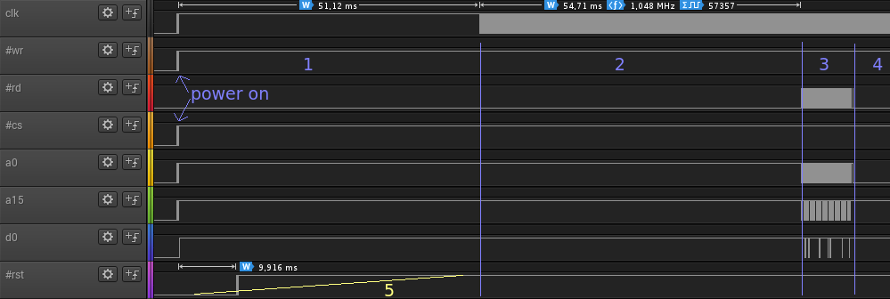
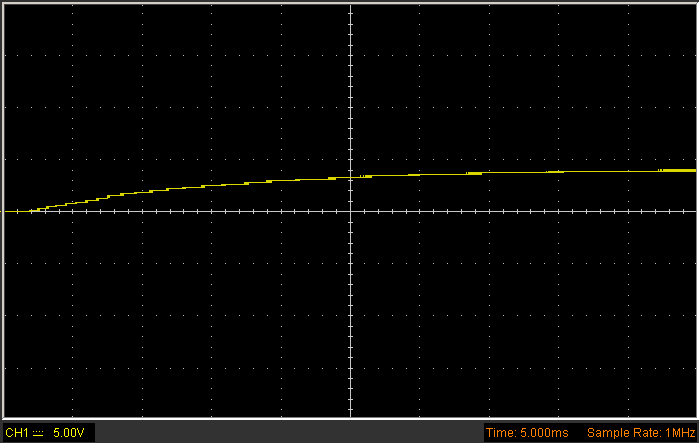
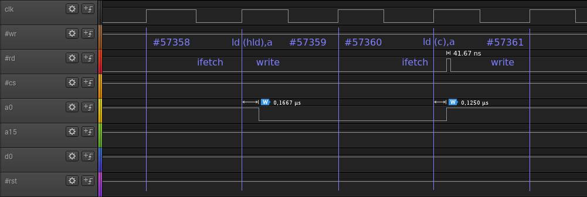
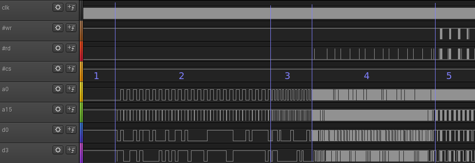

All measurements were done on a DMG-CPU B.
For the first few pictures a Hantek 6022BL oscilloscope/logic analyzer was used. (In digital mode, basically a Chineese Saleae ripoff.) The sample rate is 24M/s. Needless to say, this cheap device doesn't have decent Schmitt triggers on the logic inputs. When the probed voltage is in the range of 1.3V and 1.7V, the displayed level randomly flickers between high and low. This effect is visible during power up of the GameBoy, when the signals are slowly rising.
Later I got another (much cheaper) logic analyzer from China that claims to be a Saleae, but it isn't. Although it only costs about a third of the Hantek, it is actually able to utilize all 16 inputs! All recordings with 16M/s, 25M/s and 32M/s are done with this new one; the 24M/s ones are done with the Hantek. The level also flickers between high and low when the probed voltage is in the range of 1.3V and 1.5V. This logic analyzer returns some old buffers when it starts sampling. The beginning of the captured data needs to be ignored.
An EverDrive cartridge was used for running the test code. This means the state and timing of the data lines when reading from the cartridge may not be representative for an original cartridge. Also, when this cartridge is plugged in during power up of the GameBoy, the ramp up time of the reset line drops from ~50ms to ~40ms. Maybe there is a pull up resistor in the cartridge causing this.
After flipping the power switch to the on position, the clock, #write and #cs signals, address and data lines are ramping up. The #read signal stays low. The #reset line is delayed by about 10ms and takes about 50ms to reach its peak.

Picture 1 (24M/s)
1: After power on, signals are ramping up
2: Boot ROM zero-initializes VRAM
3: Boot ROM configures peripherals and loads/expands Nintendo logo from cartridge to VRAM
4: Boot ROM continues w/o accessing cartridge (scrolling logo down)
5: Approximated reset ramp (I don't have a relation between this logic diagram and the oscilloscope screen
below, so take this with a grain of salt)

Picture 2
Rising #reset line
The boot ROM runs for exactly 57358 clock cycles before any of the lines (except clock) is changing. For now, I assume a clock cycle starts and ends with a rising edge, although this is probably wrong. The very first cycle is an exception, because the #clock line is already high when the cycle starts, there is no rising edge. That is why the measurement in Picture 1 displays only 57357 full cycles. This is the code that gets executed during this time:
0: 31 fe ff ld sp,0xfffe ; 3 cycles 3: af xor a ; 1 4: 21 ff 9f ld hl,0x9fff ; 3 _ 7: 32 ld (hld),a ; 2 \ 8: cb 7c bit 7,h ; 2 \--> loop: 57343 cycles a: 20 fb jr nz,0x0007 ; 3 when jumping; 2 otherwise __/ c: 21 26 ff ld hl,0xff26 ; 3 f: 0e 11 ld c,0x11 ; 2 11: 3e 80 ld a,0x80 ; 2 cycles <-- ends at cycle #57357 13: 32 ld (hld),a ; 2 <-- ends at cycle #57359, address lines reflect 0xff26 14: e2 ld (c),a 15: 0c inc c 16: 3e f3 ld a,0xf3 18: e2 ld (c),a 19: 32 ld (hld),a 1a: 3e 77 ld a,0x77 1c: 77 ld (hl),a 1d: 3e fc ld a,0xfc 1f: e0 47 ld (0x47),a
The VRAM access during the loop at 0x7-0xA is not visible on the external memory bus. The first thing that can be seen on the externel bus is the operation at 0x13, which writes 0x80 into the APU register 0xff26. The instruction fetch happens at cycle #57358, the write operation at #57359. During this operation, the address lines reflect the actual address (0xff26). The #read signal may glitch sometimes for a few nanoseconds. In the picture below, these glitches measure 41.67ns. When I use a sample rate of 100M/s, they go down to 20ns and sometimes even 10ns. The data lines stay unchanged and #write stays high (deasserted). All reads and writes to registers and HRAM (0xff??) seem to behave this way.

Picture 3 (24M/s)
Boot ROM instructions at address 0x13 and 0x14

Picture 4 (24M/s)
1: Boot ROM execution w/o accessing cartridge ROM
2: Boot ROM comparing Nintendo logo (executing at addresses 0xe0...0xf0)
3: Boot ROM checking header sum (executing 0xf1...0xfb)
4: Executing code in cartridge ROM (startup code of rom-rw.gb: common.s)
5: Executing code in HRAM (main loop of rom-rw.gb: rom-rw.s)
The patterns that are visible on the two external busses of the chip are depending on which components are accessed by the CPU, PPU and DMA. The following table shows the memory map as seen by the CPU. Although in reality this is much more spaghetti-ish, I tried to divide the various components into four busses. This grouping is only for describing which signal patterns can be seen when a component from any of those groups is accessed. The boot ROM got its own group even though it should be logically fit in the "Internal Bus" group, because for some reason it deviates from the patterns seen in this group.
| mapping | External Bus | Internal Bus | External Video Bus | Internal Video Bus | Boot ROM |
|---|---|---|---|---|---|
| Boot ROM 0x0000-0x00FF |
X (*) | ||||
| Cartridge ROM 0x0000-0x7FFF |
X | ||||
| Video RAM 0x8000-0x9FFF |
X | ||||
| Cartridge RAM 0xA000-0xBFFF |
X | ||||
| Work RAM 0xC000-0xDFFF |
X | ||||
| unused area 0xE000-0xFDFF |
X (**) | ||||
| OAM RAM 0xFE00-0xFE9F |
X | ||||
| unused area 0xFEA0-0xFEFF |
? | ||||
| Registers 0xFF00-0xFF7F |
X | ||||
| Work & Stack RAM 0xFF80-0xFFFE |
X | ||||
| IE Register 0xFFFF |
X |
Table 1
(*): 0x0000-0x00FF is only mapped to the boot ROM during boot;
gets cut off when boot ROM code writes 0x01 to register 0xFF50
(**): 0xE000-0xFDFF is often called the WRAM echo or shadow area; actually the cartridge
RAM may also respond here, which could lead to short circuits during read operations
On the external bus, A15 serves as a low active ROM chip select. It will only switch to low when the cartridge ROM gets accessed. It will immediatly switch back to high at the end of the read/write operation. The other address lines (A0-A14) keep their state until another bus access is causing them to change. The #cs signal serves as a chip select for both RAMs on the external bus (WRAM and cartridge RAM). It behaves the same way as A15 does for the cartridge ROM. The WRAM uses A14 as a secondary, high active chip select. The cartridge RAM uses A13 as a secondary, high active chip select. Still, A13 and A14 act like the other address lines, not like the primary chip selects (#cs and A15). When accesing the address range 0xE000-0xFDFF, both A13 and A14 are high and therefore both RAMs are active.
When #read is low, D0-D7 are always configured as inputs (driven by the cartridge or WRAM or pulled up by a pull-up resistor). When #read is high and a chip select (#cs or A15) is low, D0-D7 are always configured as outputs (driven by the GameBoy). There is a short switching period when #read and both chip selects are high.
| && | !(#cs) && (A15) | (#cs) && (A15) | (#cs) && !(A15) |
|---|---|---|---|
| !(#read) | input → |
← input (*) → ↓ |
← input |
| (#read) | output → |
↑ ← undefined → |
← output |
Table 2
Arrows: Indicate legal state changes
(*): The "default" state, when cartridge and WRAM are not accessed
There are two peripherals that also gain access to some of the busses: The PPU and the DMA. The PPU has the highest priority, the CPU has the lowest.
| has access to bus (ordered by priority) |
Boot ROM | External Bus | Internal Bus | External Video Bus | Internal Video Bus |
|---|---|---|---|---|---|
| PPU | X (ro) | X (ro) | |||
| DMA | ? | X (ro) | ? | X (ro) | X (wo) |
| CPU | X | X | X | X | X |
Table 3
| signals visible on external bus during CPU mem access |
#write | #read | #cs | A15 | A0-A14 | D0-D7 direction | D0-D7 output buffer |
|---|---|---|---|---|---|---|---|
| Boot ROM (*) | high | low | high | high | no change TODO: double check; A8 seems to go low when accessing boot ROM | input | no change |
| External Bus | w: low r: high |
w: high r: low |
high | low | change | w: output r: input |
w: change r: no change |
| Internal Bus | high | w: low (glitchy) r: low |
high | high | change | input | no change |
| External Video Bus | high | w: low (glitchy) r: low |
high | high | no change | input | no change |
| Internal Video Bus | high | w: low (glitchy) r: low |
high | high | change | input | no change |
Table 4
Signals visible on external bus when CPU accesses any of the five groups (while DMA is not accessing WRAM or cartridge)
(*): Write access on boot ROM not tested yet
| signals visible on ext. video bus during CPU mem access |
#vwrite | #vread | #vcs | VA0-VA12 | VD0-VD7 direction | VD0-VD7 output buffer |
|---|---|---|---|---|---|---|
| Boot ROM (*) | high | low | high | change | input | ? |
| External Bus | ? | ? | high | change | input | ? |
| Internal Bus | ? | ? | high | change | input | ? |
| External Video Bus | w: low r: high |
w: high r: low |
low | change | w: output r: input |
w: change r: ? |
| Internal Video Bus | high | low | high | change | input | ? |
Table 5
Signals visible on external video bus when CPU accesses any of the five groups (while PPU and DMA are not accessing VRAM)
(*): Write access on boot ROM not tested yet
| signals visible on ext. video bus during PPU mem access |
#vwrite | #vread | #vcs | VA0-VA12 | VD0-VD7 direction |
|---|---|---|---|---|---|
| External Video Bus | high | low | low | change | input (glitchy) |
| Internal Video Bus | controlled by DMA or CPU | ||||
Table 6
Signals visible on external video bus when PPU accesses any of the two busses
| signals visible on external bus during DMA mem access |
#write | #read | #cs | A15 | A0-A14 | D0-D7 direction |
|---|---|---|---|---|---|---|
| Boot ROM (*) | ? | ? | ? | ? | ? | ? |
| External Bus | ? | ? | ? | ? | ? | ? |
| Internal Bus (*) | ? | ? | ? | ? | ? | ? |
| External Video Bus | controlled by CPU | |||||
| Internal Video Bus | ? | ? | ? | ? | ? | ? |
Table 7
Signals visible on external bus when DMA accesses any of the three/five (*) groups
(*): Not tested yet if DMA has access to boot ROM or internal bus
| signals visible on ext. video bus during DMA mem access |
#vwrite | #vread | #vcs | VA0-VA12 | VD0-VD7 direction |
|---|---|---|---|---|---|
| Boot ROM (*) | ? | ? | ? | ? | ? |
| External Bus | controlled by PPU or CPU | ||||
| Internal Bus (*) | ? | ? | ? | ? | ? |
| External Video Bus | ? | ? | ? | ? | ? |
| Internal Video Bus | ? | ? | ? | ? | ? |
Table 8
Signals visible on external video bus when DMA accesses any of the three/five (*) groups (while PPU is not accessing VRAM)
(*): Not tested yet if DMA has access to boot ROM or internal bus